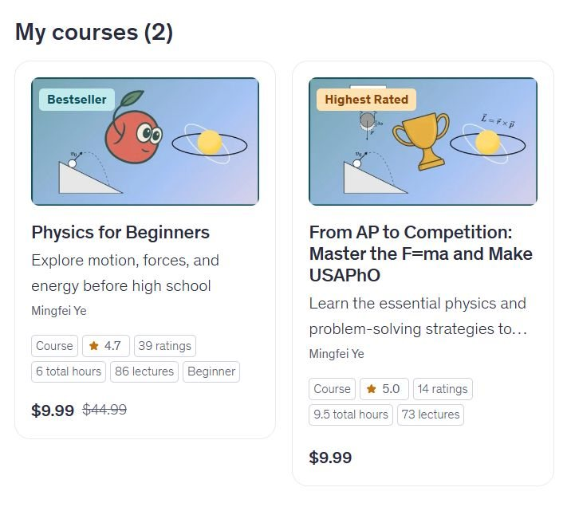
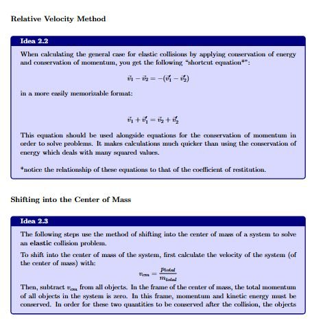
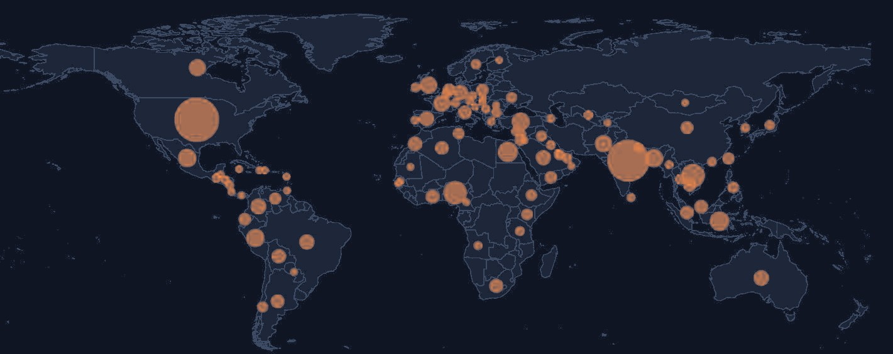

I built a three-step path from first exposure to competition physics, inspired by Feynman's teaching and my own experience learning physics. Altogether it's 21 hours of video, with original LaTeX problem sets, handouts, interactive spreadsheets and diagrams. I recorded and edited more than 150 videos myself. The courses have earned Udemy's Bestseller and Highest Rated badges.

- Physics for Beginners: motion, forces and energy before high school. 87 lectures, 5h 46m.
- Intermediate Physics: a pre-AP course that applies algebra and trigonometry to mechanics. 68 lectures, 5h 37m.
- From AP to Competition: Master the F=ma and Make USAPhO: olympiad strategy, estimation, dimensional analysis and exam-style problems. 73 lectures, 9h 41m.


In person
I also teach live. At the Youth Development Resource Center I built beginner, intermediate and competition curricula with original notes, problem sets and exams, and I've taught group classes to 150+ students. Right now I'm teaching an F=ma olympiad-prep class.